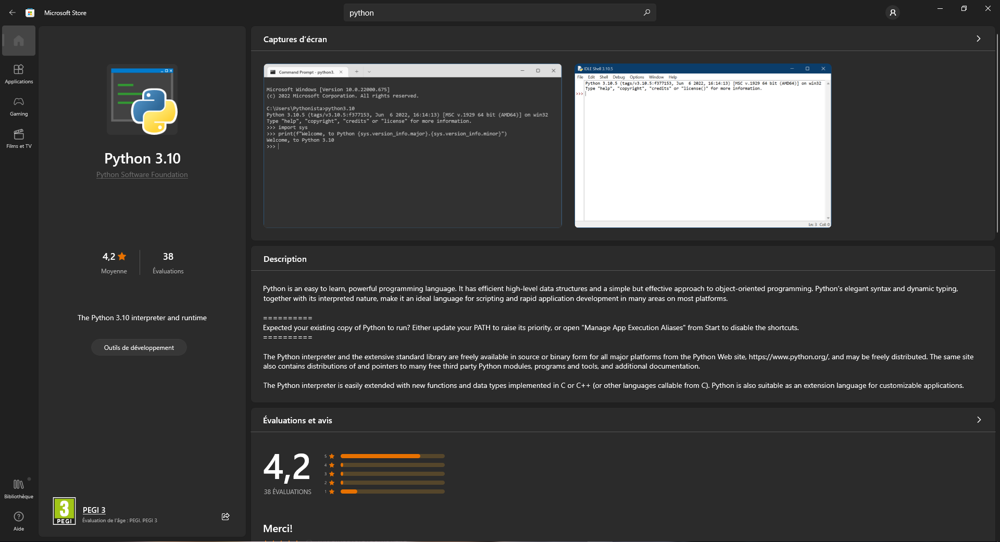

Télécharger et configurer Sira
Cette version est une version en constante évolution et fonctionnant pour l'instant uniquement sur Windows, vous devez donc installer les pré-requis grâce au tutoriel ci dessous.
Étape #1
Tout d'abord vous devez avoir python d'installer sur votre ordinateur. Si ce n'est pas le cas vous pouvez l'installer via le Microsoft store ou encore en vous rendant sur le site python.org et prendre le dernier lien officiel.
Ensuite il vous faudra installer pip afin de faire fonctionner l'intelligence artificielle. Pour ce faire, Télécharger get-pip.py puis lancer la commande suivante dans le répertoire du fichier télécharger.
python get-pip.py
Vous voila fin près à installer Sira !
Étape #2
Maintenant il vous faut ouvrir un terminal ( que se soit via python, le cmd ou encore le terminal d'un éditeur de code tel que Visual Studio Code ) et lancer toutes les commandes ci dessous pour finir l'installation !
pip install wolframalpha
pip install wikipedia
pip install SpeechRecognition
pip install ecapture
pip install twilio
pip install beautifulsoup4
pip install pyttsx3
Étape #3
Et voila ! Il ne vous reste plus qu'à lancer Sira en tapant :
python sira.py
Maintenant Sira lancer vous pouvez lui demandez d'ouvrir une application sur votre ordinateur, quel temps fait-il ou encore de vous raconter une blague !